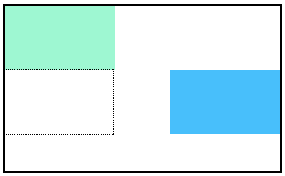

CSS declarations are structured into property
and
value
pairs:
- The font-family property defines the typeface of an element
- font-size controls the size of text displayed
- font-weight defines how thin or thick text is displayed
- The text-align property places text in the left, right,
or center of its parent container
Text can have two different
color
attributes,
color and background-color:
- color defines the color of the text,
while background-color defines the color behind the text
CSS can make an element transparent with the opacity property
CSS can also set the background of an element to an image with the
background-image
property
The !important flag will override any style,
however it should almost never be used, as it is extremely difficult to override
!Important
!important can be applied to specific attributes instead of full
rules. It will override any style no matter
how specific it is. As a result, it should almost never be used. Once !important is used, it is very
hard to override.
Since !important is used on the p selector’s color attribute, all p elements will appear blue, even
though there is a more specific .main p selector that sets the color attribute to red.
Flow of HTML
A browser will render the elements of an HTML document that has no CSS from left to right, top to
bottom, in the same order as they exist in the document. This is called the flow of elements in
HTML.
In addition to the properties that it provides to style HTML elements, CSS includes properties that
change how a browser positions elements. These properties specify where an element is located on a
page, if the element can share lines with other elements, and other related attributes.
In this lesson, you will learn five properties for adjusting the position of HTML elements in the
browser:
position
z-index
display
float
clear
Each of these properties will allow us to position and view elements on a web page. They can be used
in conjunction with any other styling properties you may know.
Position
Block-level elements like boxes create a block the full width of their parent elements, and they
prevent other elements from appearing in the same horizontal space.
Notice the block-level elements take up their own line of space and therefore don’t
overlap each other. In the browser you can see block-level elements also consistently appear on
the left side of the browser. This is the default position for block-level elements.
The default position of an element can be changed by setting its position property. The position
property
can take one of four values:
static - the default value (it does not need to be specified)
If you favor the default position of an HTML element, you don’t need to set its
position property.
Relative
This value allows you to position an element relative to its default static position on the web page.
Although the code instructs the browser to expect a relative positioning of the div, it
does not specify where the div should be positioned on the page. The
div has been positioned using two (top, left) of the four offset properties. The valid offset properties
are:
top - moves the element down
bottom - moves the element up
left - moves the element right
right - moves the element left
In the example above, the div will be moved down 20 pixels and to the right 50 pixels from its
default static position. The image displays the new position of the box. The dotted line represents
where the statically positioned (default) box was positioned.
Units for offset properties can be specified in pixels, ems, or percentages. Note that offset properties
will not work if the value of the element’s position property is the default static.
Absolute
Another way of modifying the position of an element is by setting its position to absolute.
When an element’s position is set to absolute all other elements on the page will ignore the element and act
like it is not present on the page. The element will be positioned relative to its closest positioned parent
element.
In the example above, the .box-bottom
div will be moved down and right from the top left corner of the view. If offset properties weren’t
specified,
the top box would be entirely covered by the bottom box. Take a look at the gif below:
The bottom box in this image (colored blue) is displaced from the top left corner of its container. It is 20
pixels lower and 50 pixels to the right of the top box.
In the next exercise, we will compare the scrolling of absolute elements with fixed elements.
Fixed
When an element’s position is set to absolute, as in the last exercise, the element will scroll with the
rest of the document when a user scrolls.
We can fix an element to a specific position on the page (regardless of user scrolling) by setting its
position to fixed.
This technique is often used for navigation bars on a web page.
As an example:
1. In style.css, change the position inside of the header rule to fixed. Scroll up and down the web page.
What
do you notice?
2.
Notice that part of the “Welcome” section is now covered up by the header. That’s because when we changed
the position of the header to fixed, we removed it from the flow of the html document. Let’s fix that.
Change the position of the .welcome element to relative.
3.
Offset the “Welcome” section by 200 pixels from the top. Everything might not be displaying correctly just
yet; we’ll fix it in a later exercise.
Z-index
When boxes on a web page have a combination of different positions, the boxes (and therefore, their content)
can overlap with each other, making the content difficult to read or consume.
The z-index property controls how far “back” or how far “forward” an element should appear on the web page
when elements overlap. This can be thought of the depth of elements, with deeper elements appearing behind
shallower elements.
The z-index property accepts integer values. Depending on their values, the integers instruct the browser on
the order in which elements should be displayed on the web page.
In the example above, we set the .box-top position to relative and the z-index to 2. We changed position to
relative, because the z-index property does not work on static elements. The z-index of 2 moves the .box-top
element forward, because it is greater than the .box-bottom z-index, 1. See the example image below:
In the image above, you can see the top box is moved in front of the bottom box.
Inline Display
Every HTML element has a default display value that dictates if it can share horizontal space with other
elements. Some elements fill the entire browser from left to right regardless of the size of their content.
Other elements only take up as much horizontal space as their content requires and can be directly next to
other elements.
In this lesson, we’ll cover three values for the display property: inline, block, and inline-block.
The default display for some tags, such as em, strong, and
a (link), is
called
inline.
Inline elements have a
box that wraps tightly around their content, only taking up the amount of space necessary to
display their content and not requiring a new line after each element. The height and width of
these elements cannot be specified in the CSS document. For example, the text of an anchor tag
(a) will, by default, be displayed on the same line as the surrounding text, and it will only
be as wide as necessary to contain its content. inline elements cannot be altered in size
with the height or width CSS properties.
The CSS display property provides the ability to make any element an inline element. This includes elements
that are not inline by default such as paragraphs, divs, and headings.
Block Display
Some elements are not displayed in the same line as the content around them. These are called block-level
elements. These elements fill the entire width of the page by default, but their width property can also be
set. Unless otherwise specified, they are the height necessary to accommodate their content.
Elements that are block-level by default include all levels of heading elements (h1 through h6), p, div
and footer.
strong {
display: block;
}
In the example above, all strong elements will be displayed on their own line, with no content directly on
either side of them even though their contents may not fill the width of most computer screens.
Inline-Block Display
The third value for the display property is inline-block. Inline-block display combines features of both
inline and block elements. Inline-block elements can appear next to each other and we can specify their
dimensions using the width and height properties. Images are the best example of default inline-block
elements.
For example,
divs in the CSS below will be displayed on the same line and with the specified dimensions:
I’m a rectangle!
So am I!
Me three!
In the example above, there are three rectangular divs that each contain a paragraph of text. The .rectangle
divs will all appear inline (provided there is enough space from left to right) with a width of 300 pixels
and height of 200 pixels, even though the text inside of them may not require 300 pixels by 200 pixels of
space.
Float
So far, you’ve learned how to specify the exact position of an element using offset properties. If you’re
simply interested in moving an element as far left or as far right as possible on the page, you can use the
float property.
The float property can be set to one of two values:
left - this value will move, or float, elements as far left as possible.
right - this value will move elements as far right as possible.

Floated elements must have a width specified, as in the example above. Otherwise, the element will assume
the full width of its containing element, and changing the float value will not yield any visible results.
Clear
The float property can also be used to float multiple elements at once. However, when multiple floated
elements have different heights, it can affect their layout on the page. Specifically, elements can “bump”
into each other and not allow other elements to properly move to the left or right.
The clear property specifies how elements should behave when they bump into each other on the page. It can
take on one of the following values:
left — the left side of the element will not touch any other element within the same containing element.
right — the right side of the element will not touch any other element within the same containing
element.
both — neither side of the element will touch any other element within the same containing element.